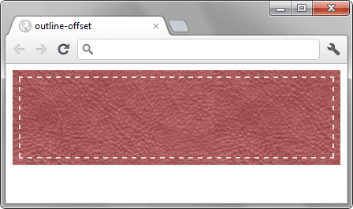

outline-offset
Устанавливает расстояние между рамкой, созданной с помощью свойства outline, и краем или границей элемента добавленной через border.
Краткая информация
| Значение по умолчанию | 0 |
|---|---|
| Наследуется | Нет |
| Применяется | Ко всем элементам |
Синтаксис
outline-offset: <размер>Значения
- <размер>
- Задаёт расстояние от края элемента до рамки. Отрицательное значение отображает рамку внутри элемента, положительное — вокруг элемента.
Пример
<!DOCTYPE html>
<html>
<head>
<meta charset="utf-8">
<title>outline-offset</title>
<style>
.clue {
background: url(images/leather.jpg); /* Фоновый рисунок */
outline: 2px dashed rgba(255,255,255,0.8); /* Пунктирная рамка */
outline-offset: -10px; /* Выводим рамку внутри элемента */
padding: 10px; /* Поля */
min-height: 100px; /* Минимальная высота */
}
</style>
</head>
<body>
<div class="clue"></div>
</body>
</html>Результат данного примера показан на рис. 1.

Рис. 1. Использование свойства outline-offset
Объектная модель
Объект.style.outlineOffset
Спецификация
| Спецификация | Статус |
|---|---|
| CSS Basic User Interface Module Level 3 | Рабочий проект |
| CSS Transitions | Рабочий проект |
Браузеры
| Internet Explorer | Chrome | Opera | Safari | Firefox |
| 1 | 9.5 | 1.2 | 1.5 |
| Android | Firefox Mobile | Opera Mobile | Safari Mobile |
| 1 | 1.5 | 10 | 1.2 |